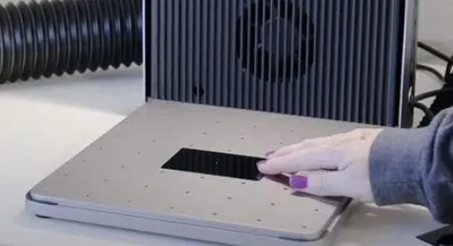

Práctica 6
XTool F1 Ultra
Aquí tienes una versión más sencilla y directa: --- En esta práctica aprendimos a usar la máquina láser xTool F1 como una opción para fabricar placas de circuito impreso (PCB). Vimos cómo el láser infrarrojo puede eliminar el cobre de la placa para formar las pistas, sin necesidad de usar una fresadora CNC. También trabajamos en la preparación de los archivos desde Altium Designer, configuramos los parámetros en el software xTool Creative Space (XCS) y realizamos pruebas sobre placas de FR4 y baquelita. Con esto pudimos evaluar qué tan útil es esta técnica para hacer prototipos rápidos, destacando su buena precisión y velocidad.
Información general
¿Qué es?
La xTool F1 Ultra es una máquina de grabado y corte láser de escritorio pensada tanto para trabajos creativos como para producción más seria. Está equipada con dos tipos de láser: un láser de fibra (20 W) y un láser de diodo/azul (20 W) — lo que le da gran versatilidad para trabajar sobre una amplia variedad de materiales.
Características
Láser de Fibra IR: Para grabado en metales como cobre Área de trabajo: 220 × 220 mm (y puede ampliarse hasta ~220 × 500 mm con accesorios). Precisión: Alta resolución para trabajos detallados. Sistema de enfoque: Medición automática de altura Cámara integrada: Para posicionamiento preciso Sistema de enfriamiento: Requerido para operación del láser de fibra Software: xTool Creative Space (XCS)

Preparación de Archivos desde Altium
Para poder usar la xTool F1 y que el láser elimine el cobre que no necesitamos, primero debemos crear una máscara de aislamiento en Altium. Esta máscara será la imagen que exportaremos al software del láser. Crear un polígono que cubra toda la placa: Se selecciona el contorno de la placa (Board Shape) y se coloca un Polygon Pour desde Place → Polygon Pour, dibujándolo de forma que cubra toda el área de la PCB. Configurar el polígono: En las propiedades del polígono se ajusta la configuración para que funcione como máscara, asignando Net: No Net, Layer: Top Layer, Estilo: Solid, y desactivando Remove Dead Copper para mantener todo el cobre. Rellenar el cobre: Finalmente, se actualiza el relleno haciendo clic derecho sobre el polígono y seleccionando Polygon Actions → Repour All, dejando lista la máscara para exportarla al láser. Exportación como DXF: Para obtener el archivo que usará la xTool F1, se debe ir a File → Fabrication Outputs → DXF. Allí se elige el formato DXF, se selecciona la Top Layer (donde está el polígono ya rellenado), y se configuran las unidades en milímetros para evitar cambios de escala. Finalmente, se guarda el archivo DXF, el cual luego se podrá importar directamente en el software XCS para preparar el grabado láser.

Preparación de material
Materiales utilizados: FR4 (Fibra de vidrio): Placa de circuito impreso estándar, con buena resistencia mecánica y adecuada para prototipos duraderos. Baquelita: Material fenólico más económico, útil para pruebas rápidas o prototipos sencillos.

Preparación de la superficie: Limpieza: Antes de grabar, limpiar la superficie de la placa con alcohol isopropílico para quitar polvo, grasa o cualquier contaminante que pueda afectar el grabado del láser.Fijación: Colocar la placa sobre la base de la xTool F1 y asegurarse de que quede completamente plana y estable, evitando que se mueva durante el grabado. Encender el enfriador: Activar el sistema de enfriamiento de la máquina antes de iniciar cualquier operación, para proteger el láser y la placa durante el grabado.
